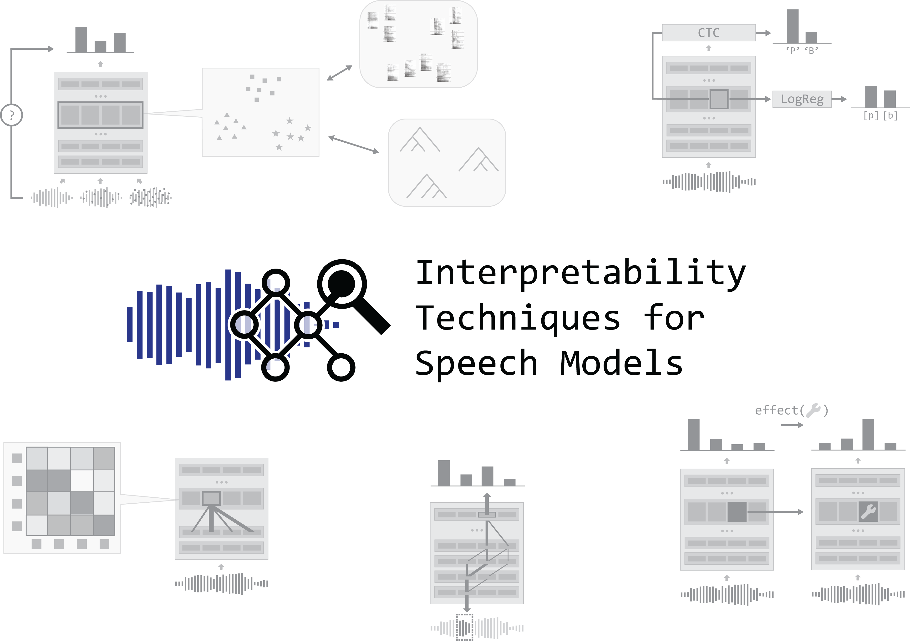

Interpretability Techniques for Speech Models#
Pre-trained foundation models have revolutionized speech technology like many other adjacent fields. The combination of their capability and opacity has sparked interest in researchers trying to interpret the models in various ways. While interpretability in fields such as computer vision and natural language processing has made significant progress towards understanding model internals and explaining their decisions, speech technology has lagged behind despite the widespread use of complex, black-box neural models. Recent studies have begun to address this gap, marked by a growing body of literature focused on interpretability in the speech domain. This tutorial provides a structured overview of interpretability techniques, their applications, implications, and limitations when applied to speech models, aiming to help researchers and practitioners better understand, evaluate, debug, and optimize speech models while building trust in their predictions. In hands-on sessions, participants will explore how speech models encode distinct features (e.g., linguistic information) and utilize them in their inference. By the end, attendees will be equipped with the tools and knowledge to start analyzing and interpreting speech models in their own research, potentially inspiring new directions.
Note
We will present our tutorial about Interpretability Techniques for Speech Models on
Sunday, August 17th at this year’s Interspeech conference in Rotterdam.
Check
out the preliminary programme below,
and sign up through the Interspeech registration form!

Preliminary programme at Interspeech 2025#
Introduction to challenges of speech data for interpretability research
Grzegorz Chrupała
Outlook on future work in interpretability, Discussion of key takeaways and findings
Marianne de Heer Kloots, Tom Lentz, Willem Zuidema
References#
Martijn Bentum, Louis ten Bosch, and Tom Lentz. The Processing of Stress in End-to-End Automatic Speech Recognition Models. In Interspeech 2024, 2350–2354. 2024. doi:10.21437/Interspeech.2024-44.
Gaofei Shen, Michaela Watkins, Afra Alishahi, Arianna Bisazza, and Grzegorz Chrupała. Encoding of lexical tone in self-supervised models of spoken language. In Kevin Duh, Helena Gomez, and Steven Bethard, editors, Proceedings of the 2024 Conference of the North American Chapter of the Association for Computational Linguistics: Human Language Technologies (Volume 1: Long Papers), 4250–4261. Mexico City, Mexico, June 2024. Association for Computational Linguistics. doi:10.18653/v1/2024.naacl-long.239.
Marianne de Heer Kloots, Hosein Mohebbi, Charlotte Pouw, Gaofei Shen, Willem Zuidema, and Martijn Bentum. What do self-supervised speech models know about Dutch? Analyzing advantages of language-specific pre-training. In Interspeech 2025. 2025. doi:10.48550/arXiv.2506.00981.
Patrick Cormac English, John D. Kelleher, and Julie Carson-Berndsen. Domain-Informed Probing of wav2vec 2.0 Embeddings for Phonetic Features. In Garrett Nicolai and Eleanor Chodroff, editors, Proceedings of the 19th SIGMORPHON Workshop on Computational Research in Phonetics, Phonology, and Morphology, 83–91. Seattle, Washington, July 2022. Association for Computational Linguistics. doi:10.18653/v1/2022.sigmorphon-1.9.
Grzegorz Chrupała, Bertrand Higy, and Afra Alishahi. Analyzing analytical methods: the case of phonology in neural models of spoken language. In Dan Jurafsky, Joyce Chai, Natalie Schluter, and Joel Tetreault, editors, Proceedings of the 58th Annual Meeting of the Association for Computational Linguistics, 4146–4156. Online, July 2020. Association for Computational Linguistics. doi:10.18653/v1/2020.acl-main.381.
Gaofei Shen, Afra Alishahi, Arianna Bisazza, and Grzegorz Chrupała. Wave to Syntax: Probing spoken language models for syntax. In Interspeech 2023, 1259–1263. 2023. doi:10.21437/Interspeech.2023-679.
Ankita Pasad, Ju-Chieh Chou, and Karen Livescu. Layer-wise analysis of a self-supervised speech representation model. In 2021 IEEE Automatic Speech Recognition and Understanding Workshop (ASRU), volume, 914–921. 2021. doi:10.1109/ASRU51503.2021.9688093.
Simon Kornblith, Mohammad Norouzi, Honglak Lee, and Geoffrey Hinton. Similarity of neural network representations revisited. In Kamalika Chaudhuri and Ruslan Salakhutdinov, editors, Proceedings of the 36th International Conference on Machine Learning, volume 97 of Proceedings of Machine Learning Research, 3519–3529. PMLR, 09–15 Jun 2019. URL: https://proceedings.mlr.press/v97/kornblith19a.html.
Marianne de Heer Kloots and Willem Zuidema. Human-like Linguistic Biases in Neural Speech Models: Phonetic Categorization and Phonotactic Constraints in Wav2Vec2.0. In Interspeech 2024, 4593–4597. 2024. doi:10.21437/Interspeech.2024-2490.
Anna Langedijk, Hosein Mohebbi, Gabriele Sarti, Willem Zuidema, and Jaap Jumelet. DecoderLens: Layerwise Interpretation of Encoder-Decoder Transformers. In Kevin Duh, Helena Gomez, and Steven Bethard, editors, Findings of the Association for Computational Linguistics: NAACL 2024, 4764–4780. Mexico City, Mexico, June 2024. Association for Computational Linguistics. doi:10.18653/v1/2024.findings-naacl.296.
Thomas Schatz. ABX-Discriminability Measures and Applications. Theses, Université Paris 6 (UPMC), September 2016. URL: https://hal.science/tel-01407461.
Robin Algayres, Tristan Ricoul, Julien Karadayi, Hugo Laurençon, Salah Zaiem, Abdelrahman Mohamed, Benoît Sagot, and Emmanuel Dupoux. DP-Parse: Finding Word Boundaries from Raw Speech with an Instance Lexicon. Transactions of the Association for Computational Linguistics, 10:1051–1065, September 2022. doi:10.1162/tacl_a_00505.
Maureen de Seyssel, Jie Chi, Skyler Seto, Maartje ter Hoeve, Masha Fedzechkina, and Natalie Schluter. Discriminating Form and Meaning in Multilingual Models with Minimal-Pair ABX Tasks. June 2025. arXiv:2505.17747 [cs]. doi:10.48550/arXiv.2505.17747.
Puyuan Peng and David Harwath. Word Discovery in Visually Grounded, Self-Supervised Speech Models. In Interspeech 2022, 2823–2827. 2022. doi:10.21437/Interspeech.2022-10652.
Erfan A Shams, Iona Gessinger, and Julie Carson-Berndsen. Uncovering syllable constituents in the self-attention-based speech representations of whisper. In Yonatan Belinkov, Najoung Kim, Jaap Jumelet, Hosein Mohebbi, Aaron Mueller, and Hanjie Chen, editors, Proceedings of the 7th BlackboxNLP Workshop: Analyzing and Interpreting Neural Networks for NLP, 238–247. Miami, Florida, US, November 2024. Association for Computational Linguistics. doi:10.18653/v1/2024.blackboxnlp-1.16.
Hosein Mohebbi, Grzegorz Chrupała, Willem Zuidema, and Afra Alishahi. Homophone Disambiguation Reveals Patterns of Context Mixing in Speech Transformers. In Houda Bouamor, Juan Pino, and Kalika Bali, editors, Proceedings of the 2023 Conference on Empirical Methods in Natural Language Processing, 8249–8260. Singapore, December 2023. Association for Computational Linguistics. doi:10.18653/v1/2023.emnlp-main.513.
Dennis Fucci, Beatrice Savoldi, Marco Gaido, Matteo Negri, Mauro Cettolo, and Luisa Bentivogli. Explainability for Speech Models: On the Challenges of Acoustic Feature Selection. In Felice Dell'Orletta, Alessandro Lenci, Simonetta Montemagni, and Rachele Sprugnoli, editors, Proceedings of the 10th Italian Conference on Computational Linguistics (CLiC-it 2024), 373–381. Pisa, Italy, December 2024. CEUR Workshop Proceedings.
Gaofei Shen, Hosein Mohebbi, Arianna Bisazza, Afra Alishahi, and Grzegorz Chrupała. On the reliability of feature attribution methods for speech classification. In Interspeech 2025. 2025. doi:10.48550/arXiv.2505.16406.
Archiki Prasad and Preethi Jyothi. How Accents Confound: Probing for Accent Information in End-to-End Speech Recognition Systems. In Dan Jurafsky, Joyce Chai, Natalie Schluter, and Joel Tetreault, editors, Proceedings of the 58th Annual Meeting of the Association for Computational Linguistics, 3739–3753. Online, July 2020. Association for Computational Linguistics. URL: https://aclanthology.org/2020.acl-main.345 (visited on 2024-10-10), doi:10.18653/v1/2020.acl-main.345.
Shubham Gupta, Mirco Ravanelli, Pascal Germain, and Cem Subakan. Phoneme Discretized Saliency Maps for Explainable Detection of AI-Generated Voice. In Interspeech 2024, 3295–3299. 2024. doi:10.21437/Interspeech.2024-632.
Xiaoliang Wu, Peter Bell, and Ajitha Rajan. Explanations for automatic speech recognition. In ICASSP 2023 - 2023 IEEE International Conference on Acoustics, Speech and Signal Processing (ICASSP), volume, 1–5. 2023. doi:10.1109/ICASSP49357.2023.10094635.
Eliana Pastor, Alkis Koudounas, Giuseppe Attanasio, Dirk Hovy, and Elena Baralis. Explaining speech classification models via word-level audio segments and paralinguistic features. In Yvette Graham and Matthew Purver, editors, Proceedings of the 18th Conference of the European Chapter of the Association for Computational Linguistics (Volume 1: Long Papers), 2221–2238. St. Julian's, Malta, March 2024. Association for Computational Linguistics. URL: https://aclanthology.org/2024.eacl-long.136/.